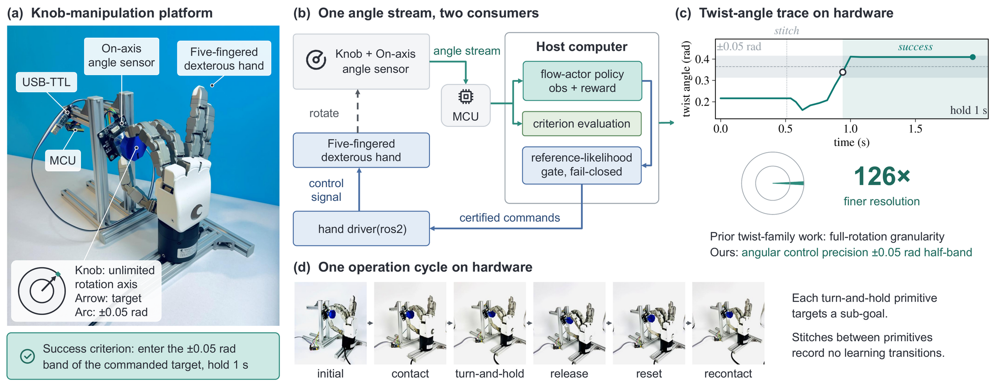
▶Videos
Real-robot hardware recordings of the knob-twisting policy. Every clip below is executed on the physical five-fingered hand; success is read from the on-axis angle sensor.
narrated hardware footage of the deployed policy and the loop's iterations
§Abstract
Deployment is not the end of dexterous policy improvement; it is where real-world improvement begins. Deployment exposes residual failure modes under three hardware conditions. Actions are irreversible, data collection is single-body, and no expert is available at failure states. We present the deploy–diagnose–repair (DDR) loop for iterative policy improvement under these conditions. Deploy executes every command through a fail-closed reference-likelihood gate and records each decision for offline replay. Diagnose attributes failures to mechanisms through interventions on recorded experience. Repair either synthesizes corrective supervision from hardware-certified actions or triggers targeted data collection according to repairability. Repairability is judged in two steps, attribution and material. We evaluate DDR on contact-rich knob twisting with a five-fingered hand. Success is the knob angle reaching the ±0.05-rad band around the commanded target, and holding for 1 s. A per-sign repair clears the goal-conditioned baseline's direction-specific failure on negative targets, a reference-likelihood screen admits a self-imitation repair before additional hardware interaction, and guard-side repairs bound the residual. The resulting policy scores 87/90 mixed-sign success with 44/45 negative targets, at a half-band 126× finer than the full-rotation granularity of prior twist-family evaluations.
§Approach: The Deploy–Diagnose–Repair Loop
A policy that performs well during training can still fail under the physical conditions of deployment. Improving a deployed policy differs from pre-deployment training because real-robot deployment imposes three conditions:
An out-of-distribution action can damage the scene or the robot, so every command is certified before execution and the step aborts fail-closed otherwise.
One physical robot yields one episode stream (B = 1) within a finite per-session hardware budget, so diagnosis proceeds offline from recorded experience.
The states where the policy fails lie off the demonstrated manifold, so corrective supervision must be synthesized from certified experience, not teleoperated.
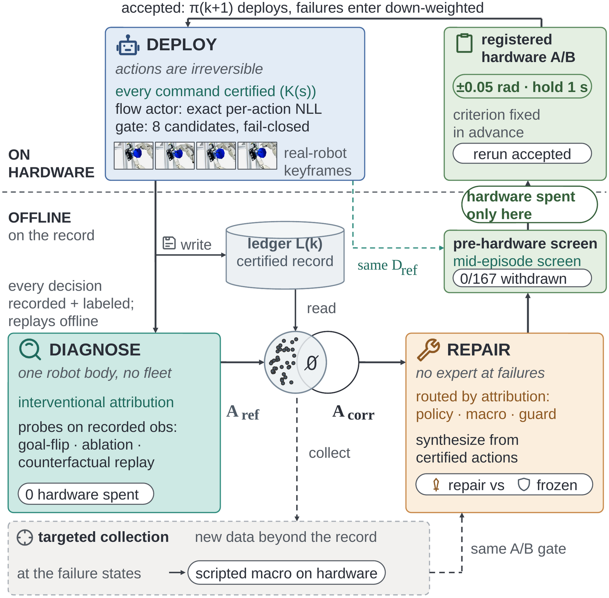
Three-phase training on a shared actor–critic–predictor architecture, then gated, fail-closed execution on hardware. Every command is certified against the reference-supported set; every decision is recorded with provenance, so every episode replays offline.
Interventional attribution on recorded observations — goal flips, history ablation, counterfactual command replay — localizes the failure mechanism. Interventions, not correlations, carry the method.
Repairability routes each failure: synthesis from hardware-certified actions when the recorded experience holds corrective material, targeted collection when it does not.
Candidates pass a pre-hardware reference-likelihood screen at recorded mid-episode states, then a preregistered hardware A/B with fixed episode counts and an invalidation rule. Accepted experience returns to the next iteration's training as a change of data only.
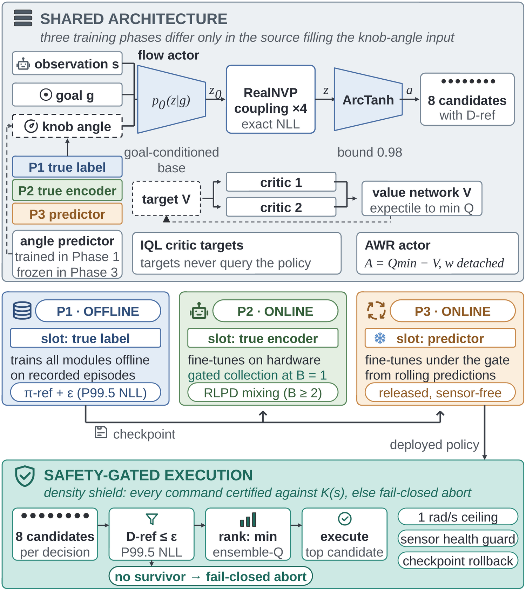
Repairability: attribution + material
Repairability is judged in two steps, attribution and material, over three components — the policy, the scripted macro, and the guard. The attribution decides which component caused the failure; the repair material available there determines whether the repair succeeds. For the policy's component, the test is a data-coverage property: at the failure states, the reference-supported set holds the actions the deploy-time gate would certify — under the repair constraint, also the only actions usable as supervision targets there. If the intersection between corrective actions and this set is non-empty, repair proceeds from recorded experience; if it is empty, no training on the same data can produce a behavior no label exhibits, and the loop routes to targeted collection — before training is spent.
⚙Hardware Platform
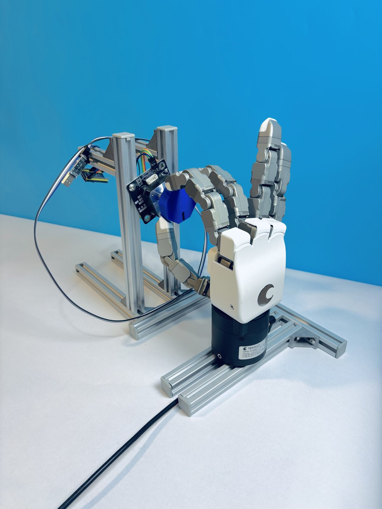
- Hand — TESOLLO DG-5F, 20 joints (12 controlled)
- Task — fine-grained twisting to commanded signed target angles, relative to episode start
- Sensing — single-turn absolute magnetic angle sensor, unwrapped across zero crossing
- Control — one target joint-position command per decision at 100 Hz; six most recent samples stacked
- Observation — hand proprioception (positions, velocities, currents), executed commands, knob angle & velocity, sub-goal, signed remaining rotation
- Policy — RealNVP-style flow actor with goal-conditioned base; IQL critic (51-bin categorical); three-phase training at B = 1 with RLPD-style replay mixing
- Deployment mode — the knob-angle input is masked; the frozen angle predictor's rolling prediction and sign class judge primitive termination
- Safety — fail-closed reference-likelihood gate on every command, 1-rad/s cumulative-travel clamp, sensor-health guards; every recorded fault caught before damage
One hardware operation cycle
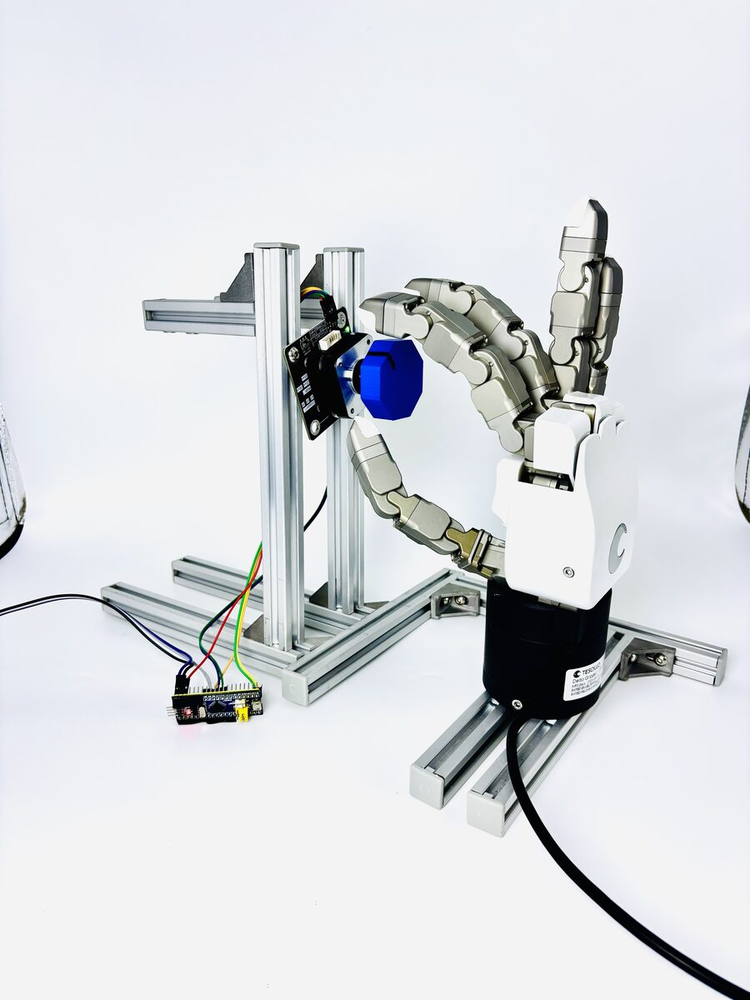
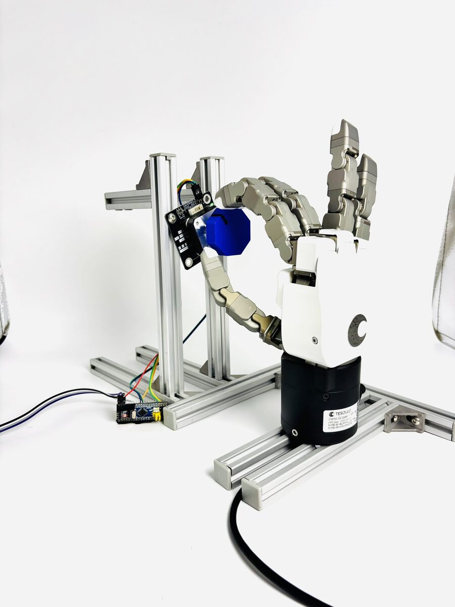
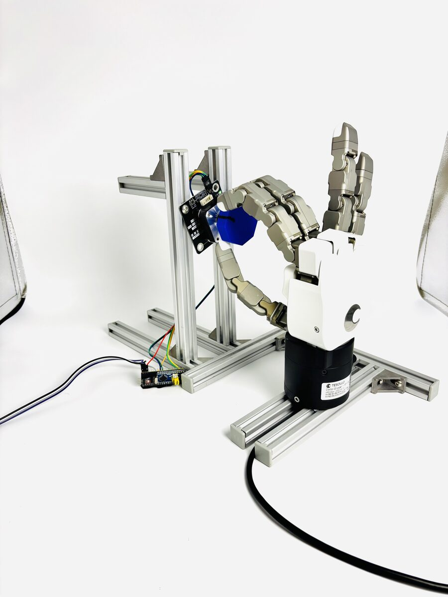
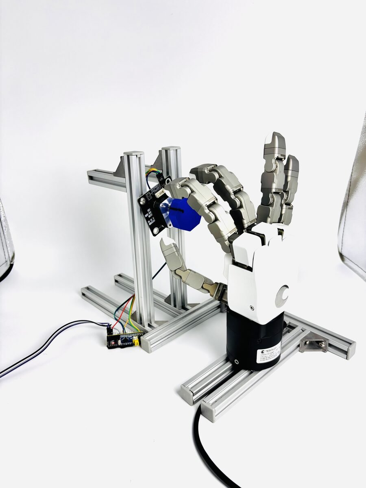
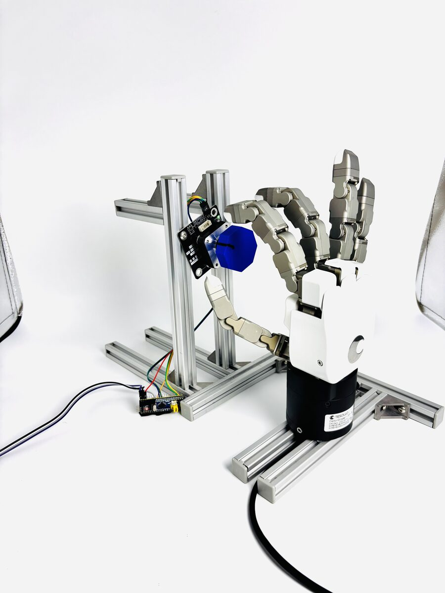
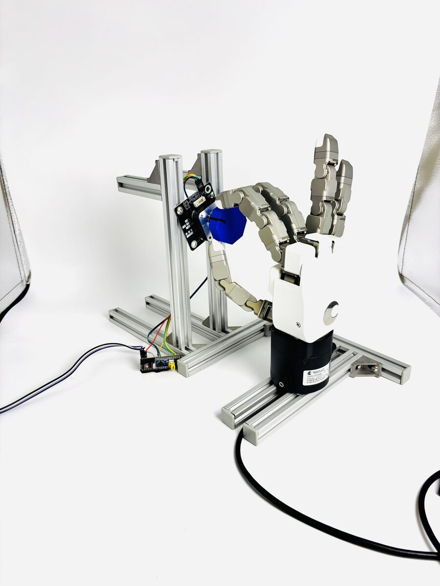
§Results
The loop's four iterations on hardware
The initial flow uses a goal-agnostic base and never reads the goal slot: sweeping the goal moves the dominant drive joint by ~8% and never flips its sign. The deployed repair swaps in a goal-conditioned base distribution, retrained on the same record with no new supervision — frozen episodes at ±2.08 rad targets reverse the knob's direction with zero safety faults.
The offline goal-sweep probe had passed, but the goal-flip intervention overturns it: flipping the goal sign moves the drive joint by only ≈0.03 rad, while ablating the action history flips the response. The per-sign seed-target repair supervises the failure states directly with gate-passing, direction-correct actions and clears the failure with zero safety faults.
The offline-strongest multi-value variant is falsified on hardware at 0/20; the label-copy variant is withdrawn by the pre-hardware screen. The deployed repair is self-imitation of the policy's own gate-passing recorded actions. A registered retraining study shows returning session data corrupts the angle predictor's direction head, not the actor.
At the policy's 4,453 excursion states the mode action is wrong-direction everywhere yet below the reference threshold (0/4453): the NLL screen is structurally blind, and no synthesis source crosses the direction gate. Repair routes to targeted collection; the loop closes at the guard — a reverse-step clamp then a registered lateral-monotonic constraint — and at the macro's stitch-level fix.
Final policy evaluation
| Evaluation level | Targets | n | Hold | Success |
|---|---|---|---|---|
| Primitive level, single sub-goals | ||||
| Turn-and-hold sub-goals | mixed-sign | 495 | 0.3 s | 495/495 |
| Turn-and-hold sub-goals | negative | 269 | 0.3 s | 269/269 |
| Whole task, macro | ||||
| Full commanded targets | mixed-sign | 90 | 1 s | 87/90 |
| Full commanded targets | negative | 45 | 1 s | 44/45 |
The recorded iterations are scored on a mixed-sign pool of ten targets spanning −0.45 to +0.377 rad under the 1 s in-band hold:
| Policy | Success | Negative-target |
|---|---|---|
| π₀, pretrained offline | 2/30 | 0/15 |
| Iteration-1 base (goal-conditioned base) | 9/30 | 1/15 |
| Iteration-2 repair (per-sign seed-target) | 17/30 | 8/15 |
| Iteration-3 repair (self-imitation) | 23/30 | 12/15 |
| Iteration-4 final | 87/90 | 44/45 |
Registered comparisons decided off the main path
| Comparison | Result | Decision |
|---|---|---|
| Online fine-tuning vs. frozen baseline (18 episodes/variant) | no significant gain; held-out error of the most probable action stays flat | not adopted |
| Multi-value seed sweep, the offline-strongest variant | falsified on hardware at 0/20 | falsified |
| Label-copy variant | withdrawn by the pre-hardware screen: 80.8% of supervised states above the deploy threshold | withdrawn |
| Drift-controlled cloning at the boundary (3 registered draws) | wrong-direction fraction moves at most one percentage point against the 0.500 requirement | rejected |
| Scripted pull-back candidate | follows its labels at supervised states, fails the same direction gate at the excursion states the trigger never reached (wrong-direction 0.995–0.999) | rejected |
| Guard: reverse-step clamp | zero effective excursions across 170 negative-motion primitives | accepted |
| Guard: lateral-monotonic constraint (registered A/B) | lateral-reversal primitives 64.5% → 8.6% | accepted |
| Scripted-macro stitch fix (policy untouched) | recontact init-failed 7/10 → 0/10 | class removed |
| Retraining with session data (28,302 → 68,112 transitions, 3 seeds) | direction head collapses from the first retraining epoch on every seed; actor holds parity on every held-out metric (registered pure-BC control, 5 seeds) | excluded |
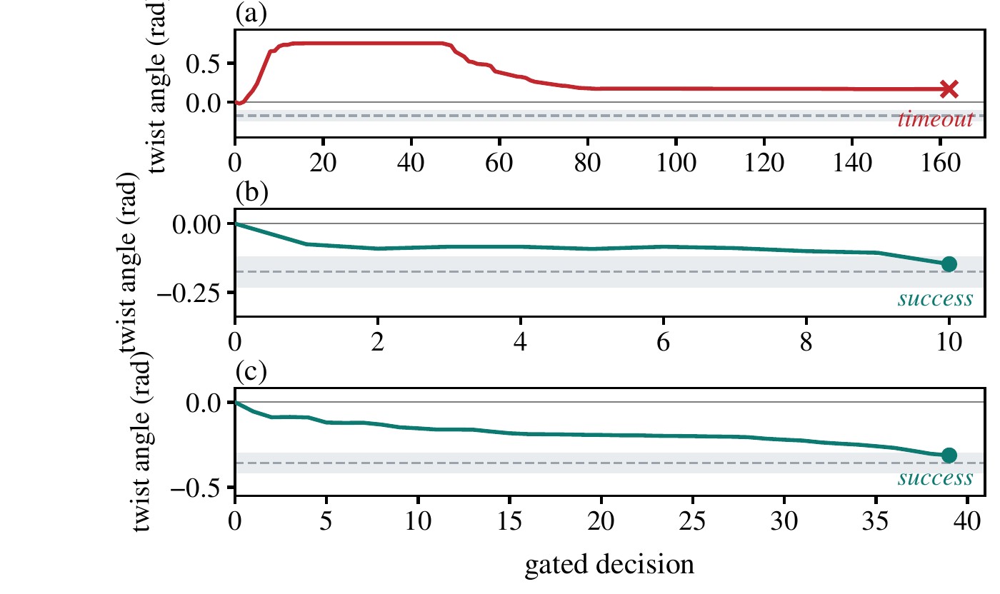
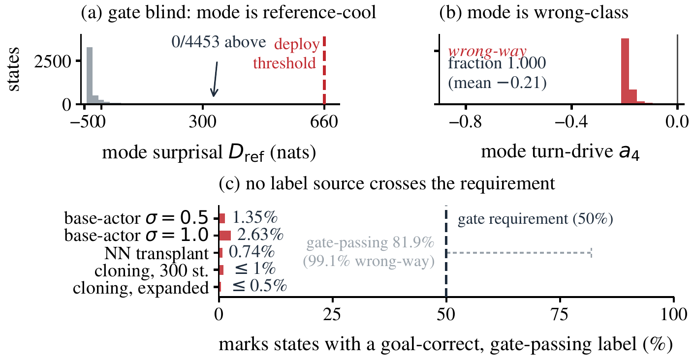
Validations
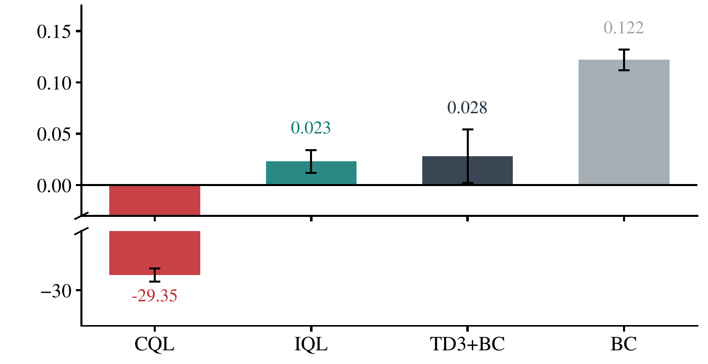
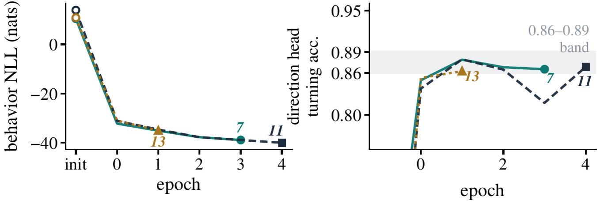
¶BibTeX
@inproceedings{anonymous2027ddr,
title = {Deploy, Diagnose, Repair: Iterative Policy Improvement for
Fine-Grained Twisting in Real-World Dexterous Manipulation},
author = {Anonymous},
booktitle = {Proceedings of the IEEE International Conference on
Robotics and Automation (ICRA)},
year = {2027},
note = {Under review}
}